работаю вместе с ИИКоммерческое предложение10.2026
Grin
Dental
Lab

Ребрендинг · сайт · журнал услуг · КП для докторов
Современный дизайн, который узнают
Задача: разработать современный дизайн, который делает Grin узнаваемым и вовлекает докторов: мастер и работы видны сразу.
- 01Стильсовременный, на 2–3 года вперёд
- 02Работыаккуратная галерея с подписями
- 03Мастерквалификация видна с первого экрана
- 04Телефонпод все размеры iPhone
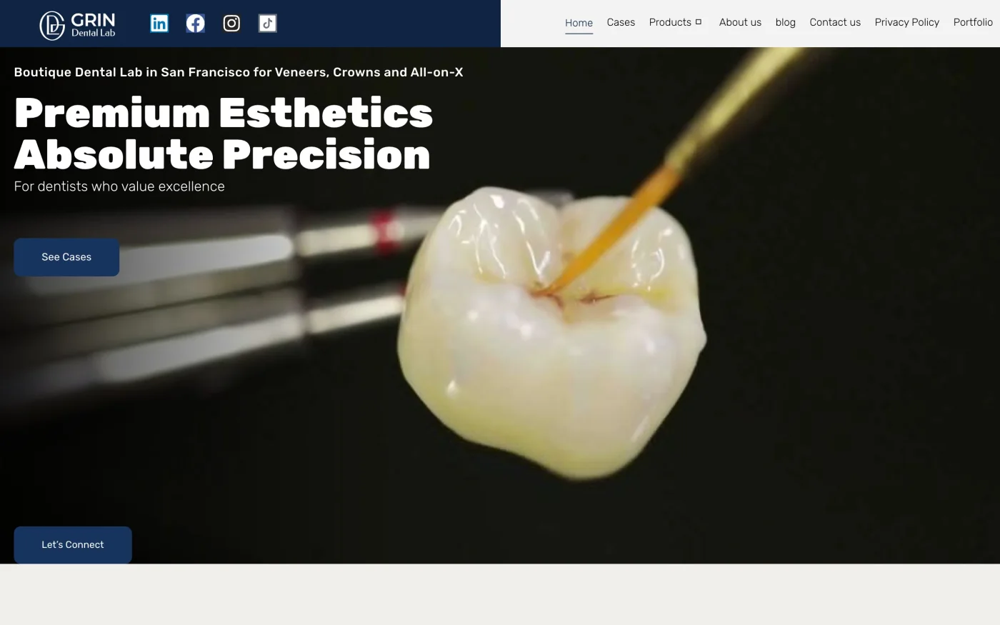
Шаблонный вид. Синий с бирюзой читается как обычная клиника
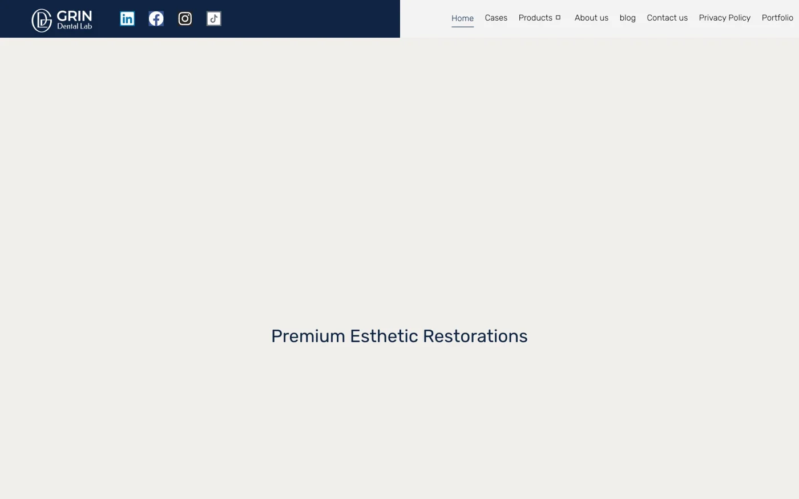
Пустые экраны. Блоки не догружаются при скролле
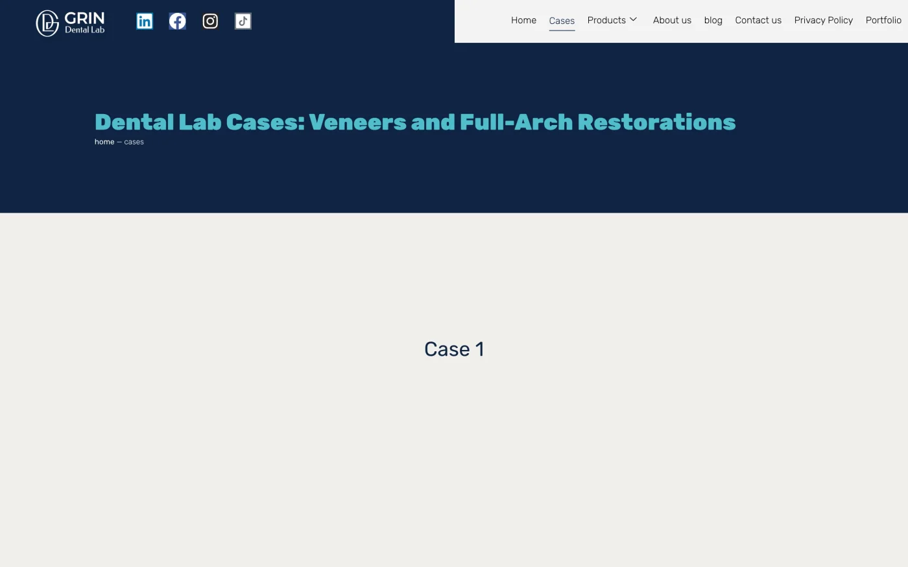
Кейсы-заглушки. «Case 1», без материала и сроков

Главное в тексте. Опыт Василия одним длинным абзацем
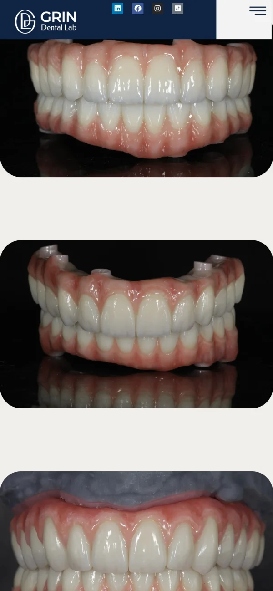
Мобильная. Фото подряд на весь экран
Один стиль, один бренд
Единый стиль на сайте, в журнале и на коробке повышает узнаваемость и профессиональность лаборатории.
- 01Ребрендинглоготип, цвета, шрифты, фото-стиль, визитка, RX-форма, наклейка на коробку
- 02Сайтдо 8 страниц: главная, кейсы, услуги, о Василии, как отправить скан, журнал, контакты. Десктоп и мобильная
- 03Журнал услуг24–32 страницы: история, мастер, услуги, кейсы. Для печати и PDF
- 04КП для докторов8–12 слайдов, шаблон для отдела продаж
- +3D и моушенпо желанию: 3D-рендеры челюстей и работ, анимации для сайта и соцсетей
Эмоция с первого экрана
Тот же стиль без карточки: только улыбка и заголовок. Акцент на результате, который видит пациент.
- Ощущениесветло и эмоционально
- Как выглядиткрасивая улыбка на весь экран
- Чем поможетпоказывает результат, ради которого приходят
Смелый гротеск
Жирный капс и одна работа по центру, как в fashion-журнале.
- Ощущениесмело и дорого, как модный журнал
- Как выглядиткрупные чёрные буквы и одна работа в центре
- Чем поможетGrin запомнят среди других лабораторий
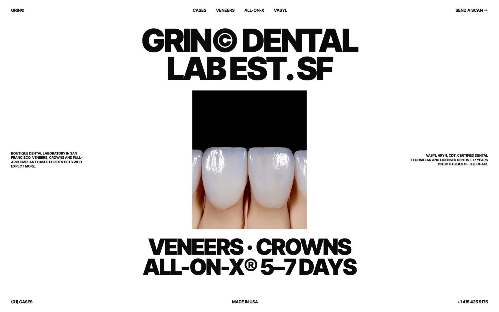
Мягкие карточки
Светлый голубой, мягкие карточки, спокойно и понятно.
- Ощущениемягко, спокойно, дружелюбно
- Как выглядитсветлые карточки с фото услуг
- Чем поможетлегко разобраться даже с телефона
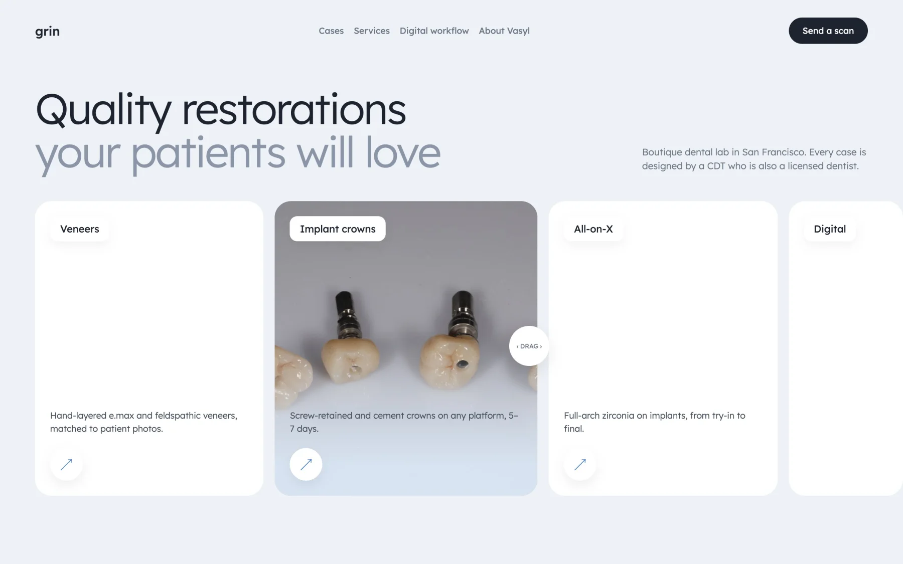
Лабораторная наука
Чёрно-белый стиль с синей точкой, работы как образцы.
- Ощущениестрого и точно, как в лаборатории
- Как выглядитчёрно-белые блоки и синяя точка
- Чем поможетвызывает доверие к качеству работ

Цифровая точность
Тёмная тема и работы крупно, акцент на технологиях.
- Ощущениетехнологично и дорого
- Как выглядиттёмный фон, работы крупно
- Чем поможетподчёркивает цифровые технологии лаборатории
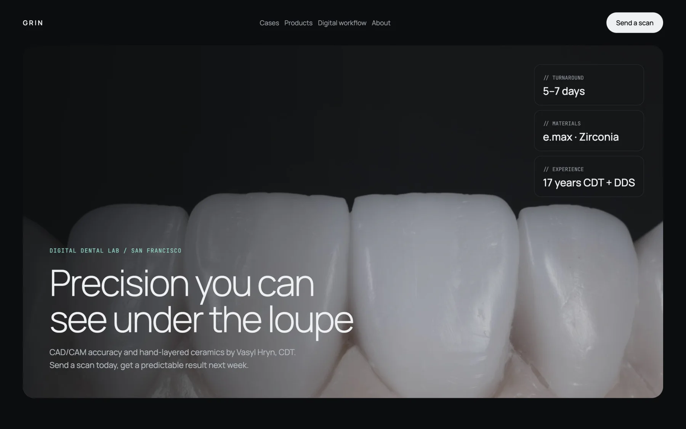
Сразу видно работу лаборатории
Ролик с улыбкой и карточка кейса поверх: материал, объём, срок и мастер. Доктор сразу понимает, что это лаборатория, а не клиника.
- Ощущениесветло, чисто, по-медицински
- Как выглядитулыбка и карточка с примером работы
- Чем поможетдоктор сразу видит, что это лаборатория
Работа крупным планом
Макро-съёмка их керамики на весь экран, как у биотех-брендов. Доктор видит качество работы раньше, чем читает текст.
- Ощущениедорого и технологично
- Как выглядитих работа крупно в живом видео
- Чем поможеткачество видно с первой секунды
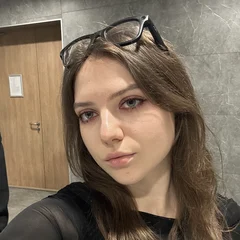
Вика Ахрамович, продуктовый дизайнер
5 лет в продуктах: B2B, стартапы, AI и финтех. В B2C — психология и сервисы для людей. Работала рядом с медициной: сайт VR-диагностики и профориентации для психологов, специалистов и их клиентов. Сейчас CPO и дизайн-лид в Mary AI: веду арт-дирекшн всего продукта.
Работаю вместе с ИИ: Claude Code, Codex и Higgsfield берут рутину, а решения и вкус остаются за мной. Поэтому быстрее обычного.
- 01Арт-дирекшн полным цикломкак дизайн-лид в стартапе веду бренд от идеи и стиля до сайта, печати и роликов
- 02Быстрая и на связиконцепт главной за 1–2 дня, правки в тот же день
- 03Живой прототипсайт сразу передаётся в разработку, без перерисовки
- 04Разные нишиB2B и B2C, AI, финтех, психология, медицина
- 053D и моушенрендеры челюстей и работ, анимации для сайта и соцсетей
Весь арт-дирекшн продукта: от платформы и сайтов до презентаций, печати и роликов
Сайт на 14 страниц, чат-подбор вместо каталога, кабинеты
Журналы о людях: съёмка, вёрстка, печать и сайт albumchik.by
Делаю журналы
Специализируюсь на журналах и альбомах: сюжет, отбор кадров, вёрстка как в глянце и подготовка к печати. Так же соберу журнал услуг Grin.
Перейти на albumchik.by ↗︎

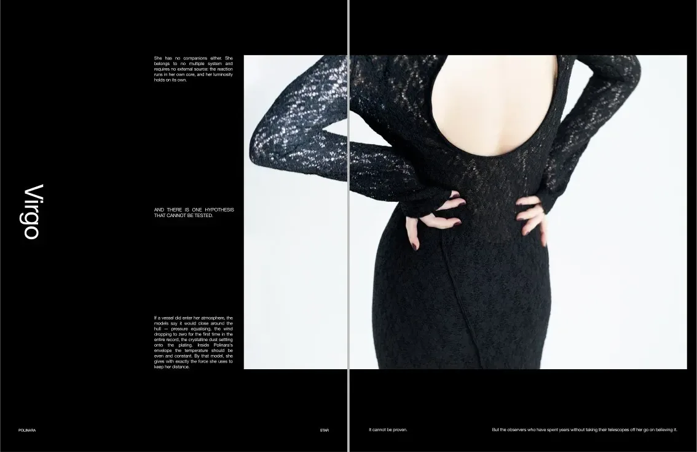

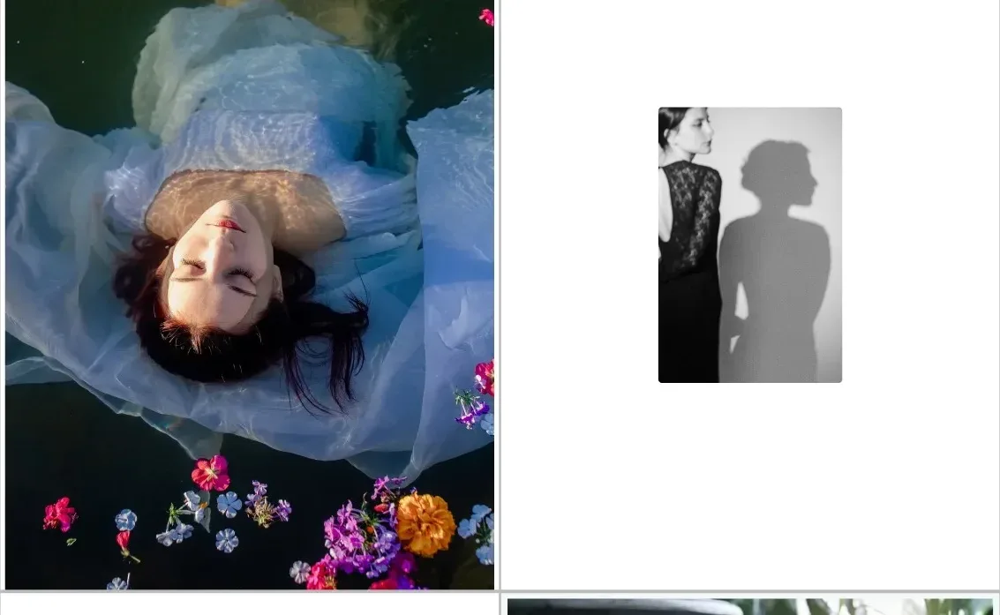
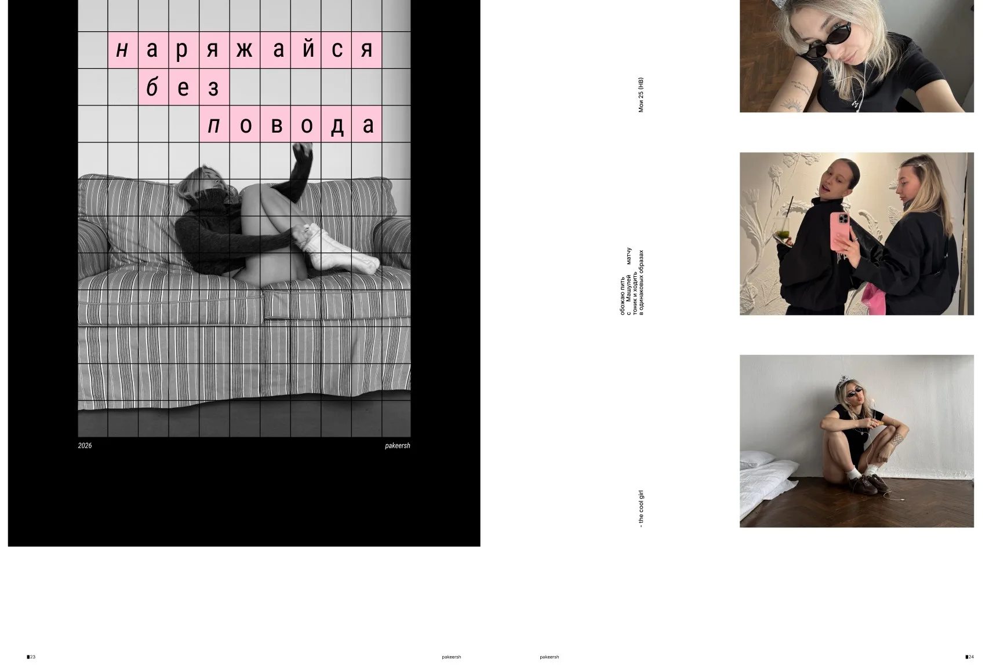
Презентации, которые дочитывают
инвестиционная презентация
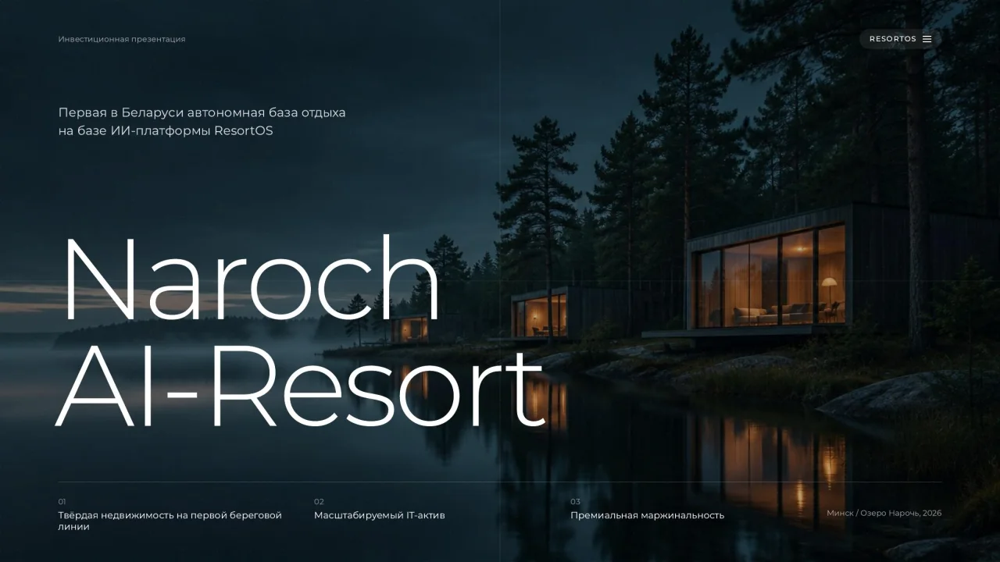
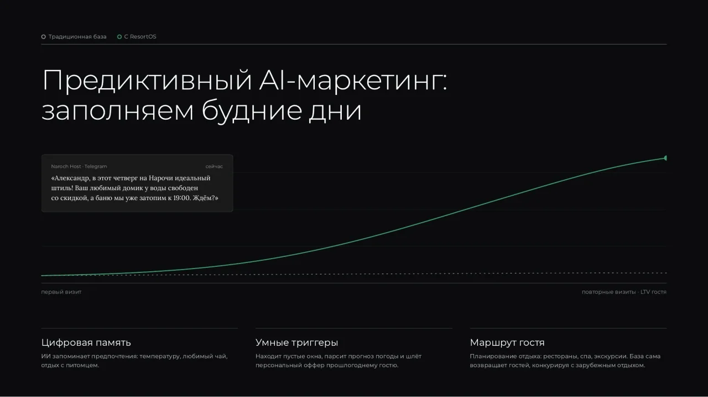
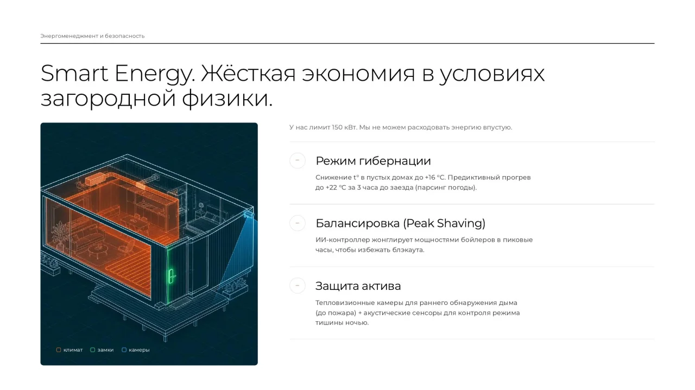
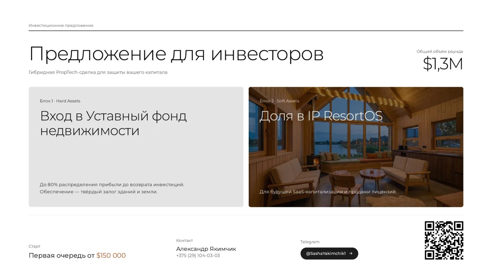
питч-дек на $3M

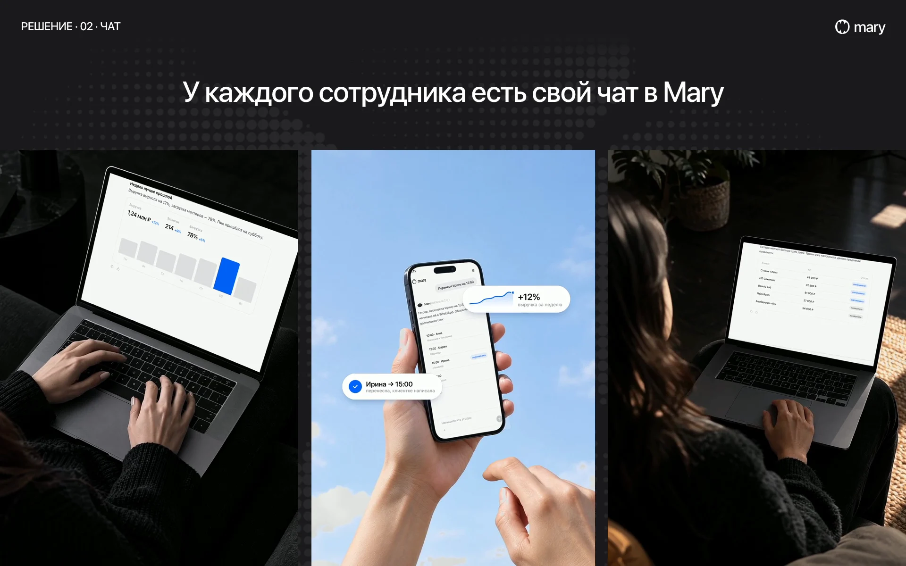
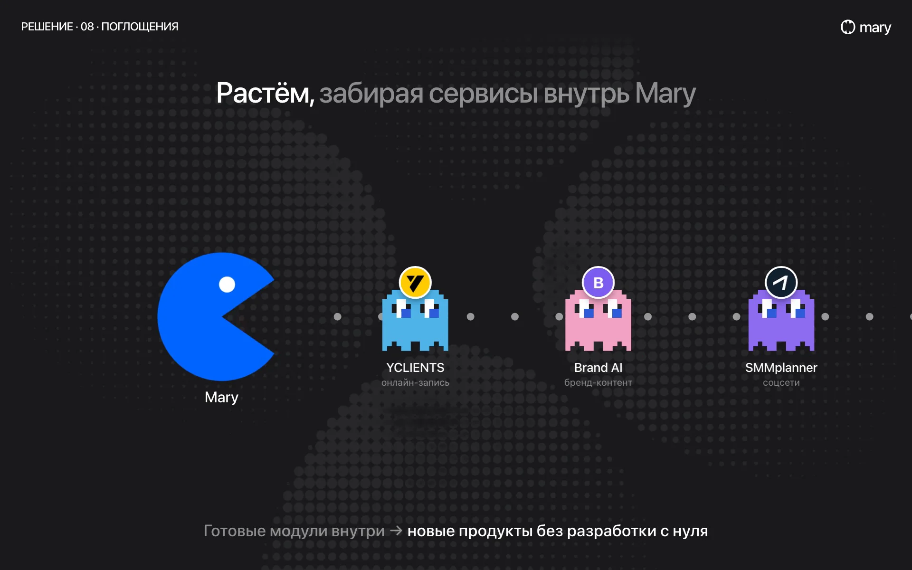

питч для корпорации
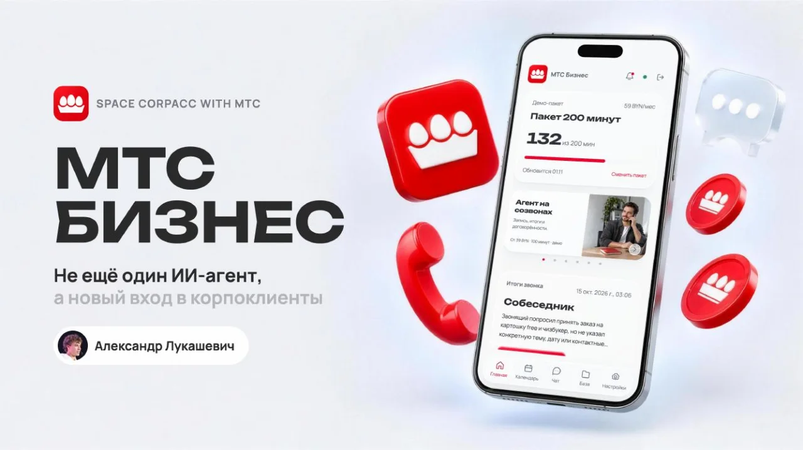
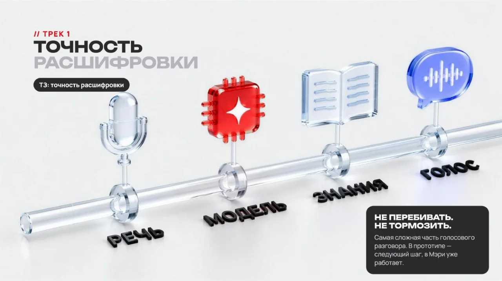
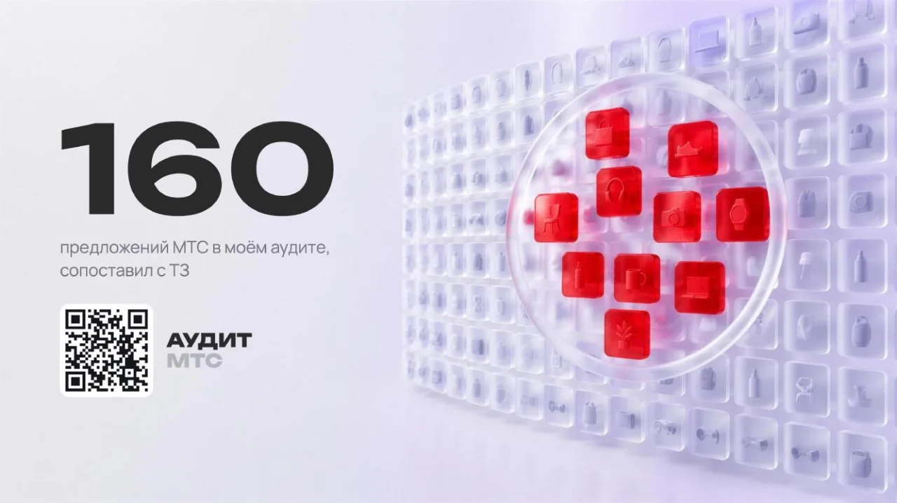
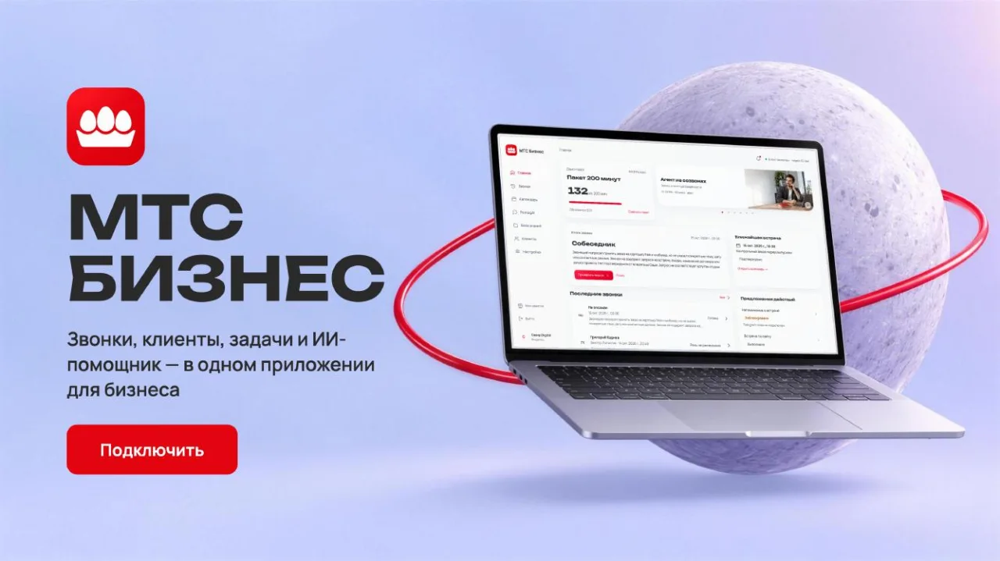
- 01Ребрендинг1–1,5 недели$1 200
- 02Дизайн сайта2 недели$1 800
- 03Журнал услуг1,5 недели$1 100
- 04КП для докторов3–4 дня$450
- +Вёрстка сайта, по желанию1–2 неделиот $1 500
- +3D-рендеры и моушенпо объёмуобсудим
Весь пакет
вместо $4 550 по отдельности
50% на старте, 50% по готовности
Буду рада
сотрудничеству
Представленные макеты — это референсы и первые идеи. Чтобы глубже погрузиться в проект, мне нужно подробнее пообщаться с вами: давайте созвонимся на 30 минут, обсудим задачи и примеры, которые вам нравятся.